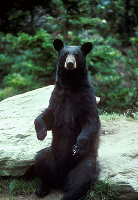
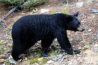
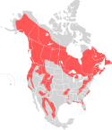
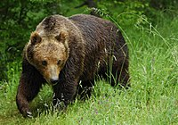
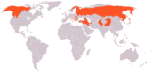
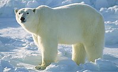
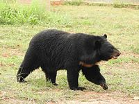
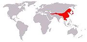

Медведи
Материал из Википедии — свободной энциклопедии
Текущая версия страницы пока не проверялась опытными участниками и
может значительно отличаться от версии, проверенной 13 января 2019;
проверки требуют 2 правки.
У этого термина существуют и другие значения, см. Медведь (значения).
Медведи |
|  |
| Бурый медведь, барибал, белый медведь, гималайский медведь |
Научная классификация |
Домен: Эукариоты
Царство: Животные
Тип: Хордовые
Класс: Млекопитающие
Отряд: Хищные
Семейство: Медвежьи
Род: Медведи
|
Международное научное название |
| Ursus Linnaeus, 1758 |
Синонимы |
- Arcticonus Pocock, 1917
- Danis J. E. Gray, 1825
- Euarctos Gray, 1864
- Mamursus Herrera, 1899
- Melanarctos Heude, 1898
- Mylarctos Lönnberg, 1923
- Myrmarctos J. E. Gray, 1864
- Selenarctos Heude, 1901
- Thalassarctos J. E. Gray, 1825
- Thalassarctus Gloger, 1841
- Thalassiarchus Kobelt, 1896
- Ursarctos Heude, 1898
- Ursulus Kretzoi, 1954
- Vetularctos Merriam, 1918
|
1 |
Медведи (лат. Ursus) — род млекопитающих отряда хищных
Согласно палеонтологическим сведениям, род медведей появился 5—6 миллионов лет назад. Первым его представителем в
настоящее время считают медведя Ursus minimus — относительно небольшое животное, чьи ископаемые останки найдены
на территории Франции. Все современные четыре вида рода, а также ряд вымерших (таких, например, как пещерный
медведь Ursus spelaeus) происходят от этрусского медведя (Ursus etruscus), жившего 1—2 миллиона лет назад.
Самым молодым видом рода является белый медведь, который отделился от бурого медведя примерно 200 000 лет назад
Содержание
- Общее описание
- Распространение
- Систематика
- Примечания
- Ссылки
Общее описание
| Общее имя и научное название |
Образ |
Подвид |
Распределение |
| Американский черный медведь
Ursus americanus (ранее Euarctos americanus ) |
 |
16 подвидов: |
 |
| Бурый медведь
Ursus arctos |
 |
15 подвидов: |
 |
| Белый медведь
Ursus maritimus (ранее Thalarctos maritimus ) |
 |
- М. М maritimus современный белый медведь
- U. m. тираний плейстоцен полярный медведь (возможно, бурый медведь)
|
 |
| Азиатский черный медведь
Ursus thibetanus (ранее Selenarctos thibetanus ) |
 |
Семь подвидов: |
 |
Длина: 1,3—2 м (белогрудый медведь), 1,5—1,8 м (чёрный медведь), 1,2—3 м
(бурый медведь разных подвидов), 1,6—3 м (белый медведь). Масса до 800 кг
у белого медведя и 750 у кадьяка. Диплоидное число хромосом 74.
Распространение
Северная Америка, север Европы и Азия.
Систематика
В роде 4 современных вида и несколько десятков подвидов, которым ранее некоторые авторы придавали видовой статус (до 78 видов).
- Бурый медведь Ursus arctos)
- Европейский бурый медведь (Ursus arctos arctos)
- Закавказский бурый медведь (Ursus arctos syriacus)
- Гризли (Ursus arctos horribilis)
- Кадьяк (Ursus arctos middendorffi)
- Апеннинский бурый медведь (Ursus arctos marsicanus)
- Тяньшанский бурый медведь (Ursus arctos isabellinus)
- Тибетский бурый медведь (Ursus arctos pruinosus), или медведь-пищухоед
- Японский бурый медведь (Ursus arctos yesoensis)
- Гобийский бурый медведь (Ursus arctos gobiensis)
- Медведь Бергмана (Ursus arctos piscator)
- Атласский медведь (Ursus arctos crowtheri)
- Калифорнийский бурый медведь (Ursus arctos californicus)
- Мексиканский бурый медведь (Ursus arctos nelsoni)
- Барибал (Ursus americanus)
- Ursus americanus altifrontalis
- Ursus americanus americanus
- Ursus americanus californiensis
- Ursus americanus carlottae
- Ursus americanus cinnamomum
- Ледниковый медведь(Ursus americanus emmonsii)
- Ursus americanus eremicus
- Ursus americanus floridanus
- Ursus americanus hamiltoni
- Ursus americanus kermodei
- Ursus americanus luteolus
- Ursus americanus machetes
- Ursus americanus perniger
- Ursus americanus pugnax
- Ursus americanus vancouveri
- Этрусский медведь (Ursus etruscus)
- Пещерный медведь (Ursus spelaeus)
- Малый пещерный медведь (Ursus rossicus)
- Ursus minimus
В систематике последние 8 видов, начиная с Очкового медведя, выделяют в особые подсемейства Медвежьих.
Барибал, бурый и белый медведи скрещиваются и дают гибриды.
* — ранее гризли выделяли в отдельный вид, а не в подвид бурого медведя. В настоящий момент статус гризли (вид или подвид) оспаривается.